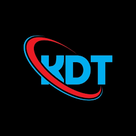

Core Summary
개발 경험을 가르칠 수 있고, 교육 경험을 시스템으로 연결할 수 있습니다.
공공데이터 AI 풀스택 과정, 빅데이터 시각화 웹서비스 과정, 기업 시스템 개발 프로젝트를 거치며 현장성과 전달력을 함께 갖추었습니다.
JAVA FULLSTACK · EDUCATOR · BACKEND
20년 동안 개발 현장과 교육 현장을 함께 경험하며, 기술을 직접 만들고 또 누군가의 성장으로 연결해 왔습니다. Java, Spring, JSP, JavaScript, MySQL, Python 기반의 풀스택 웹 개발과 실무형 훈련과정 운영이 저의 핵심 역량입니다.
SI 프로젝트에서 쌓은 안정적인 개발 감각과, KDT 과정에서 다져온 설명력과 커뮤니케이션을 바탕으로 실제로 쓰이는 서비스를 만드는 데 강점을 가지고 있습니다.
Core Summary
공공데이터 AI 풀스택 과정, 빅데이터 시각화 웹서비스 과정, 기업 시스템 개발 프로젝트를 거치며 현장성과 전달력을 함께 갖추었습니다.
20Y
총 IT 경력
4.02
울산과학대학 학점
ABOUT
웹 백엔드 개발자로 시작해 기업 시스템 개발을 수행했고, 이후에는 직업훈련 현장에서 Java, Python, DB, 웹 개발 과정을 지도해 왔습니다. 지금의 저는 개발자이자 훈련교사, 그리고 프로젝트를 끝까지 완성하는 실무형 협업자입니다.

Profile Snapshot
울산과학대학 컴퓨터정보관리 전공, 정보처리산업기사와 SCJP, SCWCD 자격을 바탕으로 실무와 교육을 꾸준히 이어왔습니다.
Introduction
저는 Java와 데이터베이스 기반의 시스템 개발 경험을 바탕으로, 실제 업무에서 필요한 기술을 구조적으로 이해하고 적용하는 데 익숙합니다. 대원C&C 재직 시절에는 현대중공업, SKTelecom 관련 프로젝트를 수행하며 안정성과 정확성이 중요한 업무 환경을 경험했습니다.
이후 교육 분야로 무대를 넓혀 더조은컴퓨터아트학원, 그린컴퓨터아카데미, 다파아카데미에서 C언어, Java, JSP, JavaScript, Python, 데이터베이스, OA 자격과정 등을 강의했습니다. 단순한 지식 전달을 넘어서 수강생이 직접 결과물을 만들고 실무 감각을 익히도록 돕는 데 큰 보람을 느끼고 있습니다.
저는 새로운 기술을 빠르게 흡수하되, 언제나 기본기와 전달력을 함께 챙기는 편입니다. 개발자로서의 분석력과 강사로서의 소통력을 함께 활용해 팀과 조직에 실질적인 가치를 만들고자 합니다.
Timeline
OA 실기와 컴퓨터활용능력 실기 수업을 진행하며 교육 분야의 첫 경력을 시작했습니다.
Java, Oracle, Miplatform, PowerBuilder 기반으로 기업 업무 시스템을 개발하고 운영했습니다.
C언어, Java 프로그래밍, 컴퓨터활용능력, MOS MASTER 과정을 강의했습니다.
KDT AI 풀스택 웹 개발, IoT 기반 웹서비스 개발, OA 및 자격증 과정 등 폭넓은 교육과정을 운영했습니다.
빅데이터 시각화 웹서비스와 자바·파이썬 기반 풀스택 웹 개발 과정을 진행하고 있습니다.
PORTFOLIO
교육 과정 운영 경험과 실무 프로젝트 경험을 함께 담았습니다. 각 카드에는 담당 역할과 사용 기술, 프로젝트 성격을 한눈에 볼 수 있도록 정리했습니다.

Project 01
공공데이터를 활용한 실무형 웹 개발 교육과정을 운영하며 Java, Python, 데이터베이스, 프론트엔드, 프로젝트 실습 전반을 지도했습니다.
실무 포인트 보기Project 02
Eclipse, JavaScript, Java, MySQL, Python, Spring을 활용한 빅데이터 UI 전문가 과정을 운영하며 실습과 프로젝트 중심 수업을 진행했습니다.
실무 포인트 보기
Project 03
Java, Miplatform, Oracle, DB2를 활용해 창고 프로세스를 개선하는 시스템 업무를 수행하며 현장 중심의 기업 프로젝트 경험을 쌓았습니다.
실무 포인트 보기Project 04
개인정보 암호화 마이그레이션, 운영 지원, 회선수 증가 대응을 위한 응용프로그램 및 배치 업무를 수행하며 안정적인 서비스 운영 경험을 쌓았습니다.
실무 포인트 보기TASTE
개인 취미를 과장하기보다, 실제 업무와 강의에서 드러나는 저의 취향을 담았습니다. 저는 언제나 이해하기 쉬운 구조, 실습 중심의 학습, 끝까지 해결하는 태도를 중요하게 생각합니다.

개념 설명에 머물지 않고, 직접 구현하고 오류를 해결해 보는 과정에서 실력이 자란다고 믿습니다.
Explain clearly, build directly.
복잡한 문제도 원인과 흐름을 차분히 정리하면 풀린다고 생각합니다. 설계와 데이터 흐름을 먼저 보는 편입니다.
Logic, flow, maintainability.
Java 중심의 기본기를 유지하면서도 Python, 데이터 분석, 시각화처럼 확장 가능한 기술을 꾸준히 받아들이고 있습니다.
Steady growth with real use.